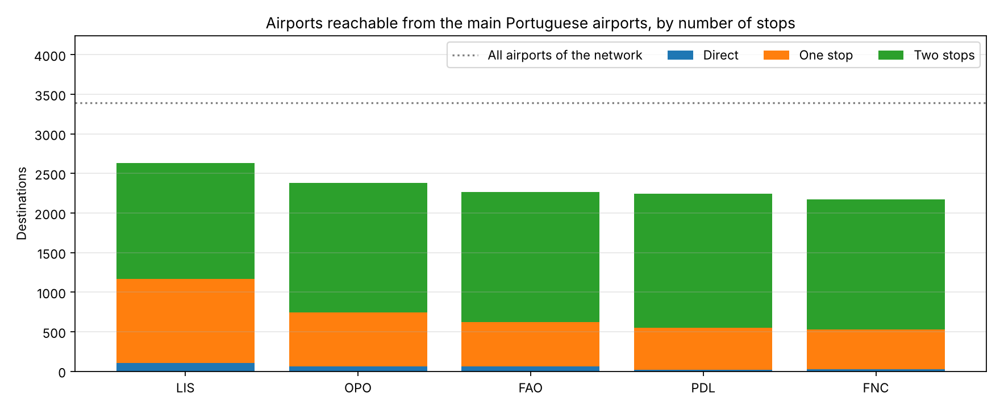

A small lakehouse on Apache Spark and Databricks Free Edition

Airports reached from the five main Portuguese airports in 2024: directly (dark) and within one stop (light).
Portugal's air traffic has fully recovered and keeps growing, but more slowly. Lisbon is the hub, yet the regional airports are almost as well connected with one stop. The weak points are Faro's winter and the half-empty domestic flights.
The data only covers routes that touch Europe, so "94%" means 94% of the airports connected to Europe, not of the whole world. Route data ends in 2024; airport data reaches 2026. "One stop" means both routes existed that year: there are no timetables or prices.
Sources: Eurostat, datasets avia_par (routes) and avia_paoa (airports), downloaded on 16 November 2026; OurAirports (airport names and coordinates). All figures are computed by the notebook ABD_Project_Portugal_Air_Connectivity.